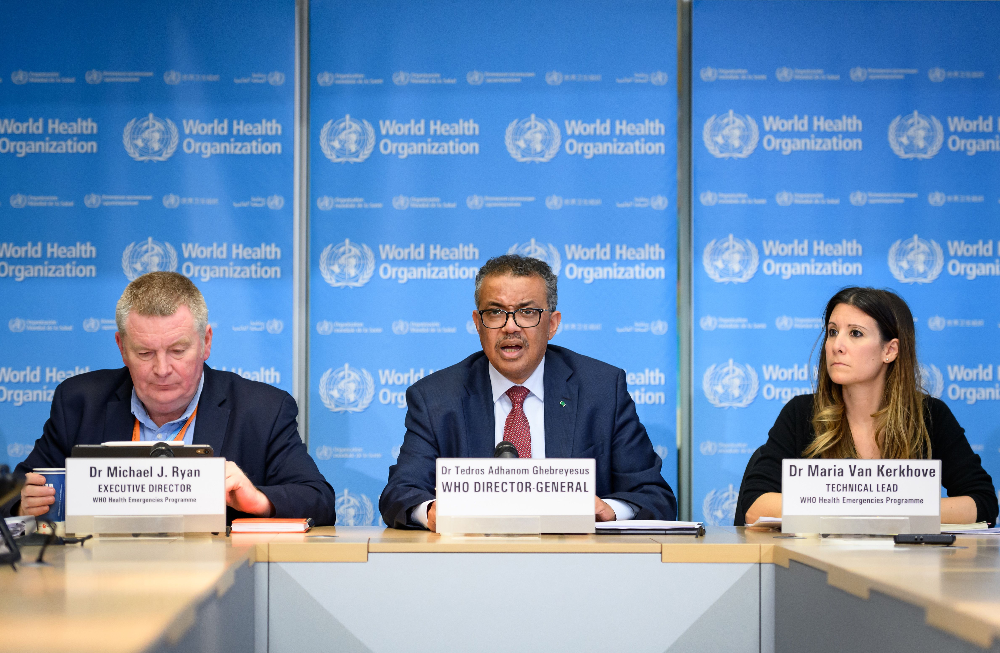

The world health organization is responsable for public health organization and it was founded the 7 of April of 1948 WHO's main purpose is to coordinate health affairs within the United Nations system. Their initial priorities were: - Communicable diseases - Plus women and children's health - Nutrition and sanitation It also classified diseases. WHO works worldwide to promote health, keep the world safe, and serve the vulnerable. To ensure that a billion more people have universal health coverage. To protect a billion more people from health emergencies. Provide a further billion people with better health and well-being.
WHO has 3 main organs - bodies the main organs of WHO are the World Health Assembly, the Executive Board, and the secretariat, headed by a director-general.
ESTABLISMENT
During the 1945 United Nations Conference on International Organization, Szeming Sze, a delegate from China, conferred with Norwegian and Brazilian delegates on creating an international health organization under the auspices of the new United Nations. The constitution of the World Health Organization was signed by all 51 countries of the United Nations, and by 10 other countries, on 22 July 1946. The first meeting of the World Health Assembly finished on 24 July 1948, having secured a budget of US$5 million for the 1949 year. The logo of the World Health Organization features the Rod of Asclepius as a symbol for healing.
ORIGIN
The International Sanitary Conferences , the first of which was held on 23 June 1851, were a series of conferences that took place until 1938, about 87 years. With the etiology, even the communicability, of many epidemic diseases still uncertain and a matter of scientific argument, international agreement on appropriate measures was difficult to reach. Seven of these international conferences, spanning 41 years, were convened before any resulted in a multi-state international agreement. Subsequent conferences, from 1902 until the final one in 1938, widened the diseases of concern for the ISC, and included discussions of responses to yellow fever, brucellosis, leprosy, tuberculosis, and typhoid. In part as a result of the successes of the Conferences, the Pan-American Sanitary Bureau , and the Office International d'Hygiène Publique were soon founded.
OBJECTIVE
The WHO fulfills this objective through its functions as defined in its Constitution: To act as the directing and coordinating authority on international health work; To establish and maintain effective collaboration with the United Nations, specialized agencies, governmental health administrations, professional groups and such other organizations as may be deemed appropriate; To assist Governments, upon request, in strengthening health services; To furnish appropriate technical assistance and, in emergencies, necessary aid upon the request or acceptance of Governments; To provide or assist in providing, upon the request of the United Nations, health services and facilities to special groups, such as the peoples of trust territories; To establish and maintain such administrative and technical services as may be required, including epidemiological and statistical services; to stimulate and advance work to eradicate epidemic, endemic and other diseases;To promote, in co-operation with other specialized agencies where necessary, the prevention of accidental injuries; To promote, in co-operation with other specialized agencies where necessary, the improvement of nutrition, housing, sanitation, recreation, economic or working conditions and other aspects of environmental hygiene; To promote co-operation among scientific and professional groups which contribute to the advancement of health; To propose conventions, agreements and regulations, and make recommendations with respect to international health matters and to perform
WHO'S PRESIDENT
Tedros Adhanom was born on March 3, 1965 in Asmara. He studied Biology at the University of Asmara and after graduating in 1986 he went to work at the CAMP Ministry of Health. In 2001 he was appointed as Director of the Tigray Health Bureau and in 2003 as Deputy Minister of Health. In 2005 Prime Minister Meles Zenawi appointed him as Minister of Health.
2011 he received the Jimmy and Rosalynn Carter Award for his contributions to improving public health in his country. It was highlighted that during his management, health coverage was expanded, with an increase in personnel and greater infrastructure, which made it possible to reduce the number of deaths from malaria and HIV. In 2016, the government of Hailemariam Desalegne proposed him as a candidate to lead the World Health Organization, with the endorsement of the African Union. 8 His candidacy caused controversy because it was the proposal of a government with accusations of authoritarian practices and for the accusation in particular of Adhanom of hiding cholera epidemics during his tenure as Minister of Health.
However, Adhanom rejected the accusation and had support for "having transformed the health system of his country.Likewise, various Ethiopian parties rejected Tedros Adhanom's candidacy due to his career in the Tigray People's Liberation Front, of Marxist ideology. The TPLF provided millions of dollars in financial support for Tedros's candidacy at the WHO. In early 2020, he oversaw the global handling of the COVID-19 pandemic. In January 2020, Tedros met with Chinese leaders, including Foreign Minister Wang Yi and PRC President Xi Jinping on the pandemic.
On January 23, 2020, a WHO emergency committee decided not to declare a public health emergency of international concern. 16 In the first week of February 2020, Tedros stated that there was no need for the world to take measures that "unnecessarily interfere with international travel and trade", such as worldwide travel restrictions. During the COVID-19 pandemic, some public health experts accused Tedros of being slow to stop the epidemic and having too close a relationship with the Chinese government. 19 Even so, he maintains relevant contacts in the United States, specifically with Bill and Melinda Gates and with the Aspen Institute
and the Harvard School of Public Health.Symbol
WHO's emblem was chosen by the First World Health Assembly in 1948. -The emblem consists of the United Nations symbol surmounted by a staff with a snake coiling round it. -The staff with the snake has long been a symbol of medicine and the medical profession
The World Health Assembly is the highest decision-making body of the World Health Organization. It meets in Geneva in May of each year with the assistance of delegations from the Member States. The primary function of the Health Assembly is to determine the policies of the Organization, appoint the Director General, supervise financial policies, and review and adopt the proposed program budget. The World Health Assembly meets annually in Geneva, Switzerland.
The Executive Council is made up of 34 technically qualified members in the field of health. Its members are elected for a term of three years.
The main Board meeting, at which the agenda for the next Health Assembly is decided and resolutions are adopted for submission to the Health Assembly, is held in January, with a second, shorter meeting in May. , immediately after the Health Assembly, to deal with matters of a more administrative nature.
The main functions of the Executive Board are to give effect to the decisions and policies of the Health Assembly, to advise it, and generally to facilitate its work.